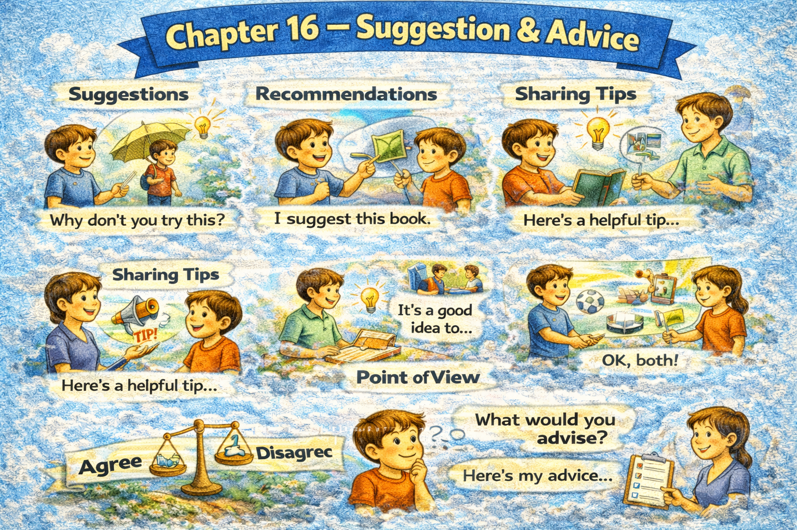

Chapter 16 — Suggestion & Advice

Micro Scene 1 — Gentle Suggestion
1️⃣ Scene Text
When offering a suggestion, I avoid sounding directive.
I propose an option rather than impose a decision.
You might consider adjusting the timeline.
It may be helpful to review the assumptions first.
If the workload feels heavy, breaking it into smaller tasks could help.
I frame advice as possibility, not obligation.
A gentle suggestion leaves space for autonomy.
Tone determines whether advice feels supportive or intrusive.
If resistance appears, I soften the phrasing.
Suggestions invite reflection rather than compliance.
Influence increases when freedom is preserved.
2️⃣ Core Verb Pool
offer
avoid
propose
impose
consider
adjust
review
frame
leave
determine
soften
invite
preserve
3️⃣ Structure Patterns
When X + verb, Y + verb
You might consider + verb-ing
It may be helpful to + verb
If X + verb, Y could + verb
X invites + noun
X increases when + clause
4️⃣ Replace & Extend
Replace the modality:
You might consider…
→ You may want to…
→ It could be useful to…
Replace the softening:
If resistance appears…
→ If hesitation arises…
→ If uncertainty remains…
Replace autonomy:
Suggestion preserves autonomy.
→ Advice should leave room for choice.
→ Guidance is stronger when optional.
5️⃣ Spoken Mode
You might want to think about adjusting the plan.
It could help to review the assumptions first.
If it feels overwhelming, breaking it down might work.
I’m just suggesting — you decide.
🔎 Structural Notes
• “might / could / may” soften intensity.
• Suggestion is framed as invitation.
• Autonomy increases receptiveness.
Micro Scene 2 — Practical Advice
1️⃣ Scene Text
When giving practical advice, I focus on concrete steps.
Instead of abstract encouragement, I suggest specific actions.
You could start by clarifying your objective.
It would be useful to define measurable criteria.
If progress slows, reassess the strategy rather than increasing effort blindly.
Effective advice reduces ambiguity.
Clear instruction improves execution.
I explain not only what to do, but why it matters.
If the reasoning is transparent, the advice becomes more persuasive.
Practical guidance connects intention with implementation.
Advice gains value when it is actionable.
2️⃣ Core Verb Pool
give
focus
suggest
start
clarify
define
reassess
reduce
improve
explain
matter
connect
gain
3️⃣ Structure Patterns
When X + verb, Y + verb
Instead of + verb-ing, X + verb
You could start by + verb-ing
It would be useful to + verb
If X + verb, Y + verb
X becomes + adjective when + clause
4️⃣ Replace & Extend
Replace the step:
You could start by clarifying the objective.
→ You could begin by identifying constraints.
→ You might first define the scope.
Replace the reasoning:
If progress slows…
→ If results plateau…
→ If obstacles persist…
Replace actionability:
Advice gains value when it is actionable.
→ Guidance is stronger when it is specific.
→ Suggestions are more effective when measurable.
5️⃣ Spoken Mode
Start by defining your goal.
It would help to set clear criteria.
If things slow down, rethink the strategy.
Make sure the advice is something you can actually do.
🔎 Structural Notes
• “start by…” anchors implementation.
• “instead of…” contrasts ineffective behavior.
• Actionable advice = concrete + reasoned.
Micro Scene 3 — Conditional Advice
1️⃣ Scene Text
Advice becomes more precise when it is conditional.
If your priority is speed, you may want to simplify the process.
If stability matters more, strengthening the foundation would be wiser.
The appropriate recommendation depends on context.
When constraints change, advice must adapt.
I avoid universal prescriptions.
Instead, I align suggestions with specific goals.
If resources are limited, focus on leverage rather than expansion.
Conditional advice respects situational differences.
The better the diagnosis, the more accurate the guidance.
Advice should respond to conditions, not ignore them.
2️⃣ Core Verb Pool
become
simplify
strengthen
depend
change
adapt
avoid
align
limit
focus
respect
respond
3️⃣ Structure Patterns
If X + verb, Y may + verb
If X + verb, Y would + verb
When X + verb, Y must + verb
X depends on + noun
Instead of + verb-ing, X + verb
The + comparative…, the + comparative…
4️⃣ Replace & Extend
Replace priority:
If growth is your priority…
→ If risk reduction matters more…
→ If efficiency is the goal…
Replace adaptation:
When circumstances shift…
→ When variables change…
→ When pressure increases…
Replace alignment:
Advice depends on context.
→ Strategy depends on conditions.
→ Guidance depends on objectives.
5️⃣ Spoken Mode
If speed matters most, simplify it.
If you care more about stability, strengthen the base first.
Advice depends on your priorities.
There isn’t one rule for everything.
The better the diagnosis, the better the advice.
🔎 Structural Notes
• “If…, then…” implied structure.
• “avoid universal prescriptions” signals nuance.
• Conditional framing prevents oversimplification.
Micro Scene 4 — Direct Recommendation
1️⃣ Scene Text
In some situations, a direct recommendation is necessary.
When the risk is significant, clarity outweighs softness.
I recommend postponing the launch until the issues are resolved.
You should reassess the data before making a final decision.
If the consequences are irreversible, caution becomes essential.
Direct advice reduces ambiguity in urgent contexts.
I distinguish between optional suggestions and critical warnings.
When safety or integrity is involved, firmness is justified.
A clear recommendation signals responsibility.
Tone remains respectful, even when the message is firm.
Strong guidance protects long-term stability.
2️⃣ Core Verb Pool
recommend
postpone
resolve
reassess
distinguish
justify
signal
remain
protect
3️⃣ Structure Patterns
In some situations,…
When X + verb, Y + verb
I recommend + verb-ing
You should + verb
If X + verb, Y + verb
X remains + adjective
4️⃣ Replace & Extend
Replace firmness:
You should reconsider the timeline.
→ You should delay the rollout.
→ You should prioritize review.
Replace urgency:
When the risk is high…
→ When consequences are serious…
→ When safety is involved…
Replace responsibility:
A clear recommendation signals responsibility.
→ Direct advice reflects accountability.
→ Firm guidance demonstrates care.
5️⃣ Spoken Mode
I recommend waiting until this is fixed.
You should review the data again.
When the risk is serious, it’s better to be clear.
I’m being direct because it matters.
🔎 Structural Notes
• “You should” increases strength.
• “I recommend” formal advisory tone.
• Directness justified by consequence level.
Micro Scene 5 — Offering Support with Advice
1️⃣ Scene Text
Advice is more effective when paired with support.
I do not simply suggest change; I offer assistance.
If you decide to revise the plan, I can help review it.
Support reduces defensiveness.
When guidance is collaborative, resistance decreases.
I emphasize shared goals rather than personal criticism.
If implementation feels challenging, we can break it down together.
Advice delivered with empathy strengthens trust.
Practical support transforms suggestion into partnership.
Collaboration increases acceptance.
Influence grows when respect is evident.
2️⃣ Core Verb Pool
pair
suggest
offer
decide
review
reduce
emphasize
feel
break down
deliver
strengthen
transform
increase
grow
3️⃣ Structure Patterns
X is more + adjective when + clause
I do not + verb; I + verb
If you + verb, I can + verb
When X + verb, Y + verb
X transforms A into B
X increases when + clause
4️⃣ Replace & Extend
Replace assistance:
I can help review it.
→ I can walk through it with you.
→ I can support implementation.
Replace empathy:
Advice delivered with empathy…
→ Feedback offered respectfully…
→ Guidance given collaboratively…
Replace collaboration:
Collaboration increases acceptance.
→ Partnership strengthens commitment.
→ Shared effort builds alignment.
5️⃣ Spoken Mode
If you want, I can help you with it.
We can work through it together.
I’m not just pointing out a problem — I’m offering support.
Advice feels better when it’s collaborative.
🔎 Structural Notes
• “I can help” reduces hierarchical tone.
• “We can…” signals shared responsibility.
• Support reframes advice from critique to alliance.
Micro Scene 6 — Withholding Advice
1️⃣ Scene Text
Not every situation requires advice.
Sometimes the most appropriate response is attentive listening.
If the other person seeks validation rather than instruction, silence may be wiser.
Unsolicited advice can generate resistance.
I assess whether guidance is truly needed before offering it.
Respect includes recognizing autonomy.
When someone is processing emotion, advice may feel dismissive.
Timing determines receptiveness.
Withholding advice does not imply indifference.
It reflects situational awareness.
Influence includes knowing when not to intervene.
2️⃣ Core Verb Pool
require
seek
generate
assess
recognize
process
feel
determine
withhold
imply
reflect
intervene
3️⃣ Structure Patterns
Not every X + verb
If X + verb, Y may + verb
X does not imply Y; it + verb
When X + verb, Y + verb
X includes + verb-ing
X determines + noun
4️⃣ Replace & Extend
Replace validation:
If someone seeks understanding…
→ If someone seeks empathy…
→ If someone seeks support…
Replace intervention:
Withholding advice reflects awareness.
→ Silence reflects respect.
→ Listening reflects patience.
Replace timing:
Timing determines effectiveness.
→ Context determines relevance.
→ Readiness determines receptivity.
5️⃣ Spoken Mode
Not every situation needs advice.
Sometimes just listening is better.
If they don’t ask for guidance, I don’t force it.
Silence can be respectful.
Knowing when not to speak is also influence.
🔎 Structural Notes
• “unsolicited advice” signals boundary violation.
• “does not imply…, it…” reframes misconception.
• Influence includes restraint.
🔸 Integration Scene — Suggestion & Advice Structure
Suggestions preserve autonomy.
Advice adapts to context.
Gentle phrasing reduces resistance.
Direct recommendations are justified by risk.
Conditional guidance respects variability.
Support increases acceptance.
Withholding advice reflects awareness.
Influence depends on tone.
Autonomy strengthens receptiveness.
Clarity increases effectiveness.
Timing shapes response.
Firmness must be proportional.
Empathy enhances persuasion.
Guidance requires diagnosis.
Advice is strongest when optional.
Respect sustains influence.
Integration Verb Focus
suggest
recommend
advise
support
adapt
withhold
respect
influence